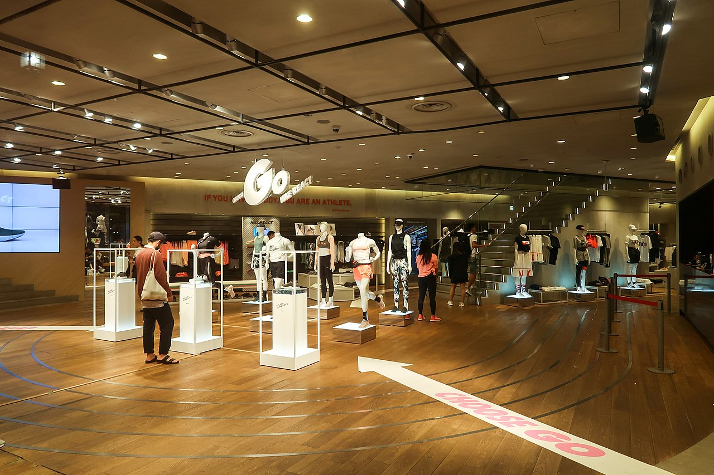
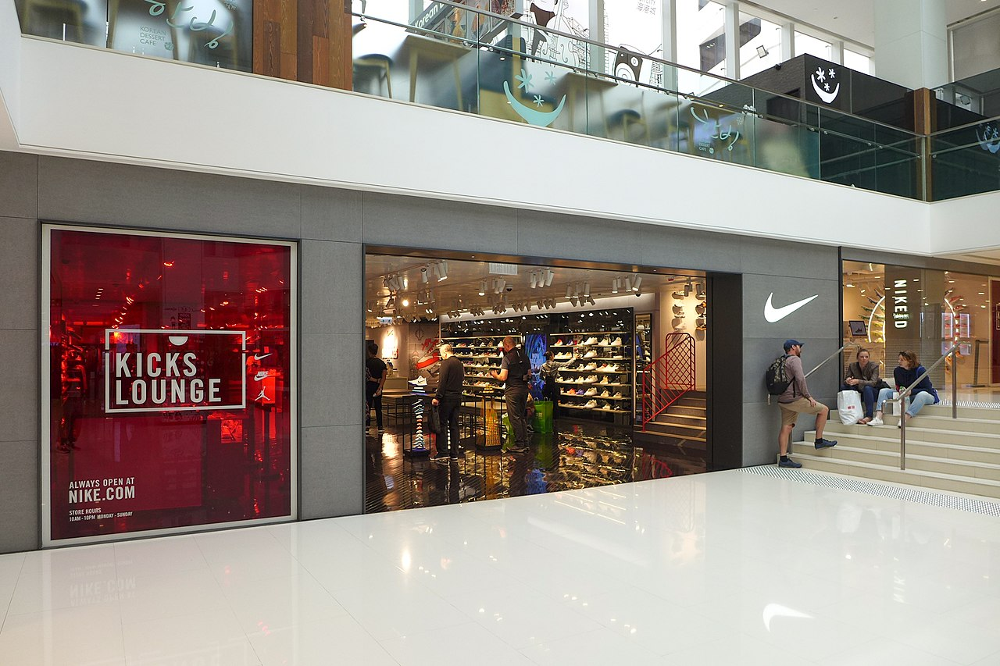

Nike, Inc.
Nike, Inc.(thường được gọi là Nike) là một tập đoàn đa quốc gia của Mỹ tham gia vào việc thiết kế, phát triển, sản xuất và tiếp thị và bán hàng trên toàn thế giới giày dép, may mặc, thiết bị, phụ kiện và dịch vụ. Công ty có trụ sở gần Beaverton, Oregon, trong khu vực đô thị Portland. [3] Đây là nhà cung cấp giày thể thao và may mặc lớn nhất thế giới và là nhà sản xuất thiết bị thể thao lớn, với doanh thu vượt quá 37,4 tỷ đô la Mỹ trong năm tài chính 2020 (kết thúc vào ngày 31 tháng 5 năm 2020). [4] Tính đến năm 2020, nó đã sử dụng 76.700 người trên toàn thế giới. [5] Chỉ riêng năm 2020, thương hiệu đã được định giá vượt quá 32 tỷ đô la, khiến nó trở thành thương hiệu có giá trị nhất trong số các doanh nghiệp thể thao. [6] Trước đó, vào năm 2017, thương hiệu Nike được định giá 29,6 tỷ USD. [7] Nike đứng thứ 89 trong danh sách Fortune 500 năm 2018 của các tập đoàn lớn nhất Hoa Kỳ theo tổng doanh thu. [8] Công ty được thành lập vào ngày 25 tháng 1 năm 1964, với tên gọi "Blue Ribbon Sports", bởi Bill Bowerman và Phil Knight, và chính thức trở thành Nike, Inc. vào ngày 30 tháng 5 năm 1971. Công ty lấy tên từ Nike, nữ thần chiến thắng hy lạp. [9] Nike tiếp thị các sản phẩm của mình dưới thương hiệu riêng của mình, cũng như Nike Golf, Nike Pro, Nike +, Air Jordan, Nike Blazers, Air Force 1, Nike Dunk, Air Max, Foamposite, Nike Skateboarding, Nike CR7,[10] và các công ty con bao gồm Jordan Brand và Converse. Nike cũng sở hữu Bauer Hockey từ năm 1995 đến năm 2008, và trước đây sở hữu Cole Haan, Umbro và Hurley International. [11] Ngoài sản xuất đồ thể thao và thiết bị, công ty còn điều hành các cửa hàng bán lẻ dưới tên Niketown. Nike tài trợ cho nhiều vận động viên và đội thể thao cao cấp trên khắp thế giới, với các thương hiệu được công nhận cao của "Just Do It" và logo Swoosh.
Origins and history
Nike, ban đầu được gọi là Blue Ribbon Sports (BRS), được thành lập bởi vận động viên điền kinh Phil Knight của Đại học Oregon và huấn luyện viên của ông, Bill Bowerman, vào ngày 25 tháng 1 năm 1964. [12] Công ty ban đầu hoạt động tại Eugene, Oregon với tư cách là nhà phân phối cho nhà sản xuất giày Nhật Bản Onitsuka Tiger, làm cho hầu hết doanh số bán hàng theo dõi đáp ứng với ô tô của Knight. [12] Theo Otis Davis, một vận động viên sinh viên của Đại học Oregon được huấn luyện bởi Bowerman và huy chương vàng Olympic tại Thế vận hội Mùa hè 1960, huấn luyện viên của ông đã tạo ra đôi giày Nike đầu tiên cho ông, mâu thuẫn với tuyên bố rằng chúng được sản xuất cho Phil Knight. Davis nói: "Tôi đã nói với Tom Brokaw rằng tôi là người đầu tiên. Tôi không quan tâm tất cả các tỷ phú nói gì. Bill Bowerman đã làm đôi giày đầu tiên cho tôi. Mọi người không tin tôi. Trên thực tế, tôi không thích cách họ cảm thấy trên đôi chân của tôi. Không có sự hỗ trợ và họ quá chặt chẽ. Nhưng tôi thấy Bowerman làm chúng từ cây bánh quế sắt, và chúng là của tôi." [13]